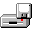
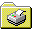
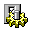
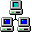

3½ Floppy (A:)
Printers
Control Panel
NetworkScroll — the trough is a dithered checkerboard.
Internet Explorer 3.0 is not currently your default browser.
Would you like to make it your default browser?